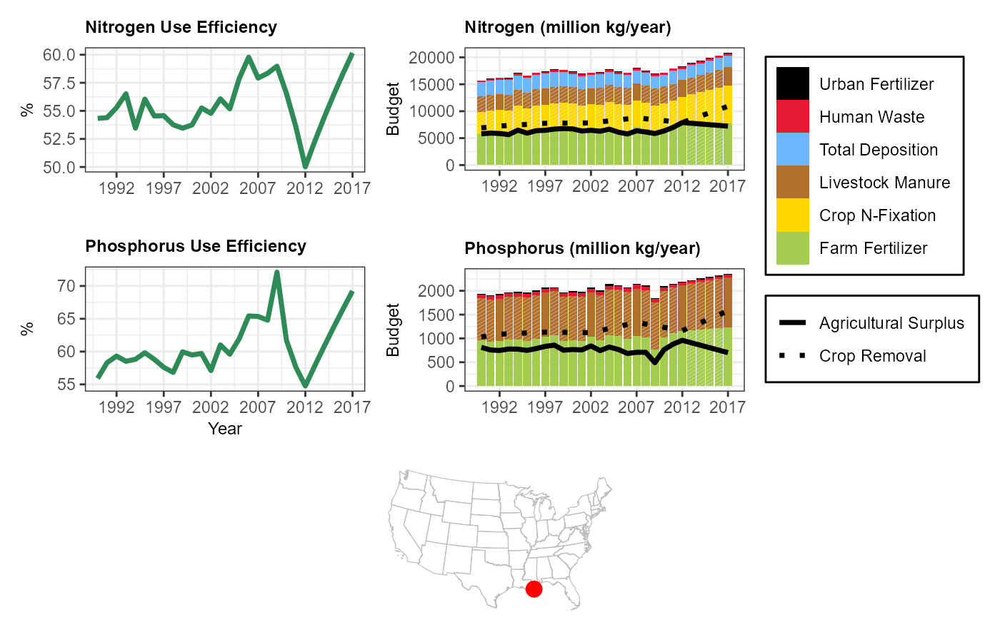
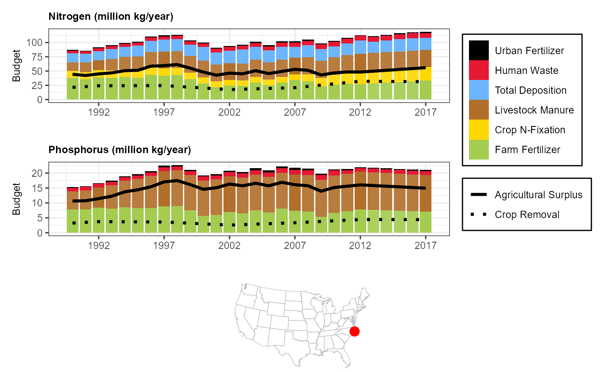
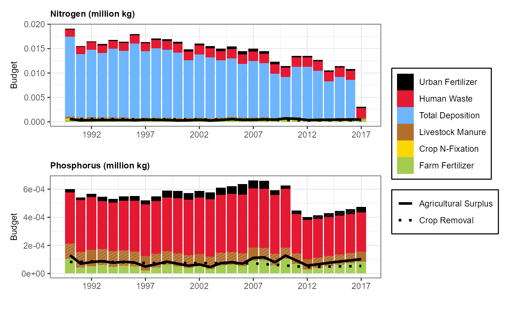
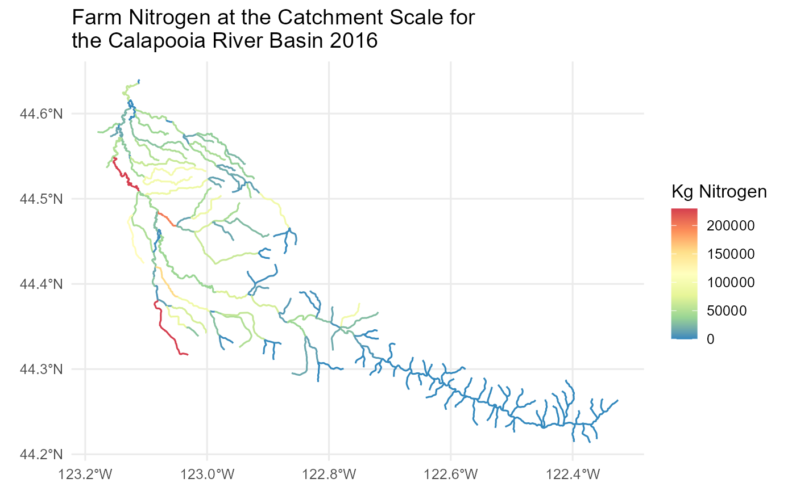
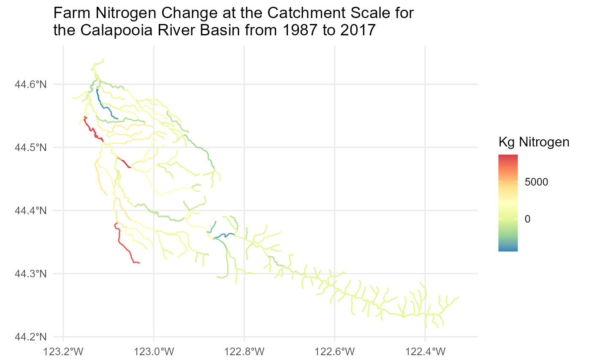
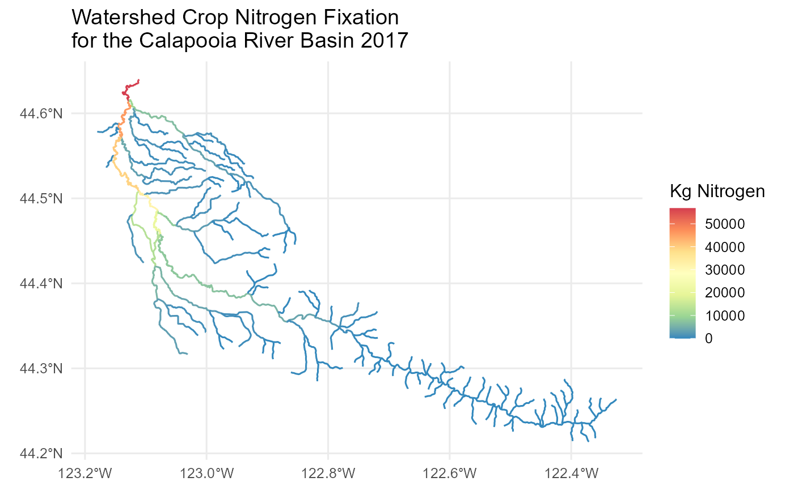

Use sc_plotnni and lc_plotnni
In the following examples, we use sc_plotnni and
lc_plotnni functions to plot annual time series of nitrogen
and phosphorus budget data for a given watershed. These data are plotted
from 1990-2017. Hatching on the bars is reflective of data linearly
interpolated between agricultural census years.
Mississippi-Atchafalaya River Basin
library(StreamCatTools)
library(ggplot2)
library(ggpattern)
com <- '22812041'
sc_plotnni(comid = com, include.nue = TRUE)
Neuse River, North Carolina
com <- '10975909'
sc_plotnni(comid = com)
Lake Kanasatka, New Hampshire
com = '6738112'
lc_plotnni(comid = com) ## Use sc_get_nni and lc_get_nni to pull NNI budget data In these examples, we access all available NNI metrics for user-defined years. Most NNI metrics are available from 1987 to 2017, except for nitrogen deposition, phosphorus deposition, and nitrogen and phosphorus point source loads. These metrics are returned for available years.
Cuyahoga River
Return dataframe of NNI metrics for Cuyahoga River
com <- 15588532
years <- '1987, 1992, 1997, 2002, 2007, 2012, 2017'
cuyahoga <- sc_get_nni(year=years,
comid=com,
aoi='ws',
showAreaSqKm=FALSE)
colnames(cuyahoga)
#> [1] "comid" "n_ff_1992ws" "n_ff_1997ws" "n_ff_2002ws"
#> [5] "n_ff_2007ws" "n_ff_2012ws" "n_ff_2017ws" "p_ff_1987ws"
#> [9] "p_ff_1992ws" "p_ff_1997ws" "p_ff_2002ws" "p_ff_2007ws"
#> [13] "p_ff_2012ws" "p_ff_2017ws" "n_ff_1987ws" "n_uf_1987ws"
#> [17] "n_uf_1992ws" "n_uf_1997ws" "n_uf_2002ws" "n_uf_2007ws"
#> [21] "n_uf_2012ws" "n_uf_2017ws" "p_uf_1987ws" "p_uf_1992ws"
#> [25] "p_uf_1997ws" "p_uf_2002ws" "p_uf_2007ws" "p_uf_2012ws"
#> [29] "p_uf_2017ws" "n_ags_1987ws" "n_ags_1992ws" "n_ags_1997ws"
#> [33] "n_ags_2002ws" "n_lw_1987ws" "n_lw_1992ws" "n_lw_1997ws"
#> [37] "n_lw_2002ws" "n_lw_2007ws" "n_lw_2012ws" "n_lw_2017ws"
#> [41] "p_lw_1987ws" "p_lw_1992ws" "p_lw_1997ws" "p_lw_2002ws"
#> [45] "n_cr_1992ws" "n_cr_1997ws" "n_cr_2002ws" "n_cr_2007ws"
#> [49] "n_cr_2012ws" "n_cr_2017ws" "p_cr_1987ws" "p_cr_1992ws"
#> [53] "p_cr_1997ws" "p_cr_2002ws" "p_cr_2007ws" "p_cr_2012ws"
#> [57] "p_cr_2017ws" "n_cr_1987ws" "n_ags_2012ws" "n_ags_2017ws"
#> [61] "p_ags_1987ws" "p_ags_1992ws" "p_ags_1997ws" "p_ags_2002ws"
#> [65] "p_ags_2007ws" "p_ags_2012ws" "p_ags_2017ws" "n_cf_1987ws"
#> [69] "n_cf_1992ws" "n_cf_1997ws" "n_cf_2002ws" "n_ags_2007ws"
#> [73] "n_cf_2007ws" "n_cf_2012ws" "n_cf_2017ws" "p_lw_2007ws"
#> [77] "p_lw_2012ws" "p_lw_2017ws" "n_hw_1987ws" "n_hw_1992ws"
#> [81] "n_hw_1997ws" "n_hw_2002ws" "n_hw_2007ws" "n_hw_2012ws"
#> [85] "n_hw_2017ws" "p_hw_1987ws" "p_hw_1992ws" "p_hw_1997ws"
#> [89] "p_hw_2002ws" "p_hw_2007ws" "p_hw_2012ws" "p_hw_2017ws"
#> [93] "p_dep_1997ws" "p_dep_2002ws" "p_dep_2007ws" "p_dep_2012ws"
#> [97] "n_usgsww_1992ws" "n_usgsww_2012ws" "p_usgsww_1992ws" "p_usgsww_2012ws"
#> [101] "n_leg_1987ws" "n_leg_1992ws" "n_leg_1997ws" "n_leg_2002ws"
#> [105] "n_leg_2007ws" "n_leg_2012ws" "n_leg_2017ws" "p_leg_1987ws"
#> [109] "p_leg_1992ws" "p_leg_1997ws" "p_leg_2002ws" "p_leg_2007ws"
#> [113] "p_leg_2012ws" "p_leg_2017ws" "n_dep_1992ws" "n_dep_1997ws"
#> [117] "n_dep_2002ws" "n_dep_2007ws" "n_dep_2012ws" "n_dep_2017ws"Transform sc_get_nni dataframe into long dataframe
nin <- cuyahoga[, grepl("^(n)", names(cuyahoga)) &
!grepl("(cr)", names(cuyahoga)) &
!grepl("(ags)", names(cuyahoga)) &
!grepl("(leg)", names(cuyahoga))]
names(nin) <- sapply(names(nin), function(col){
substr(col, 3, nchar(col) -2)
})
nin <- nin |>
tidyr::pivot_longer(
cols = everything(),
names_to = c("metric", "year"),
names_sep = "_",
values_to = "value"
) |>
dplyr::mutate(year = as.integer(year))
pin <- cuyahoga[, grepl("^(p)", names(cuyahoga)) &
!grepl("(cr)", names(cuyahoga)) &
!grepl("(ags)", names(cuyahoga)) &
!grepl("(leg)", names(cuyahoga))]
names(pin) <- sapply(names(pin), function(col){
substr(col, 3, nchar(col) -2)
})
pin <- pin |>
tidyr::pivot_longer(
cols = everything(),
names_to = c("metric", "year"),
names_sep = "_",
values_to = "value"
) |>
dplyr::mutate(year = as.integer(year))Pie Chart of Sources of N and P to the Cuyahoga River in 2012
n2012 <- nin |>
dplyr::filter(year == '2012')
p2012 <- pin |>
dplyr::filter(year == '2012')
colorsn <- c('ff' = '#A3CC51', 'lw'='#B26F2C','hw'='#E51932','uf'='black', 'dep'='#6db6ff', 'cf'='#FFD700', 'usgsww' = 'pink')
colorsp <- c('ff' = '#A3CC51', 'lw'='#B26F2C','hw'='#E51932','uf'='black', 'usgsww' = 'pink')
n <- ggplot(nin, aes(x = "", y = value, fill = metric)) +
geom_bar(stat = "identity", width = 1) +
coord_polar(theta = "y") +
scale_fill_manual(values = colorsn, labels =
c('ff' = 'Farm Fertilizer',
'uf' = 'Urban Fertilizer',
'hw' = 'Human Waste',
'lw' = 'Livestock Waste',
'dep' = 'Total Deposition',
'usgsww' = 'Point Source Loads',
'cf' = 'Crop N-Fixation')
) +
theme_void() +
labs(title = "Nitrogen",
fill = 'Source')
p <- ggplot(pin, aes(x = "", y = value, fill = metric)) +
geom_bar(stat = "identity", width = 1) +
coord_polar(theta = "y") +
scale_fill_manual(values = colorsp) +
theme_void() +
labs(title = "Phosphorus") +
guides(fill = 'none')
n + p + patchwork::plot_layout(guides = "collect")
Percent change of N and P inputs from 1992 to 2017
nperc <- nin |>
dplyr::filter(year %in% c('1992', '2017')) |>
tidyr::pivot_wider(values_from = 'value',
names_from = 'year')
nperc$perchange <- (nperc$`2017` - nperc$`1992`) / nperc$`1992` * 100
nperc <- nperc |>
dplyr::select(metric, perchange) |>
dplyr::filter(metric != 'usgsww') |>
dplyr::rename('Source' = 'metric', 'Nitrogen Percent Change' = 'perchange')
pperc <- pin |>
dplyr::filter(year %in% c('1992', '2017')) |>
tidyr::pivot_wider(values_from = 'value',
names_from = 'year')
pperc$perchange <- (pperc$`2017` - pperc$`1992`) / pperc$`1992` * 100
pperc <- pperc |>
dplyr::select(metric, perchange) |>
dplyr::filter(metric != 'usgsww') |>
dplyr::rename('Source' = 'metric', 'Phosphorus Percent Change' = 'perchange')
perc <- dplyr::left_join(nperc, pperc, by = 'Source')
perc <- perc |> dplyr::mutate(
Source = dplyr::case_when(
Source == 'ff' ~ 'Farm Fertilizer',
Source == 'uf' ~ 'Urban Fertilizer',
Source == 'lw' ~ 'Livestock Waste',
Source == 'cf' ~ 'Crop N-Fixation',
Source == 'dep' ~ 'Atmos. Deposition',
Source == 'hw' ~ 'Human Waste'
)
)
tibble::tibble(perc)
#> # A tibble: 6 × 3
#> Source `Nitrogen Percent Change` `Phosphorus Percent Change`
#> <chr> <dbl> <dbl>
#> 1 Farm Fertilizer 6.09 -0.847
#> 2 Urban Fertilizer 182. 66.6
#> 3 Livestock Waste -13.1 -15.3
#> 4 Crop N-Fixation 55.0 NA
#> 5 Human Waste -4.59 -43.0
#> 6 Atmos. Deposition -31.7 NALocal catchment and watershed N and P inputs to the Platte River Basin
com <- 17416474
tibble::tibble(sc_get_nni(year='2017', comid=com, aoi='cat,ws'))
#> # A tibble: 1 × 37
#> comid n_ff_2017cat n_ff_2017ws p_ff_2017cat p_ff_2017ws n_uf_2017cat
#> <int> <dbl> <dbl> <dbl> <dbl> <dbl>
#> 1 17416474 29206. 451370919. 4652. 68351881. 2715.
#> # ℹ 31 more variables: n_uf_2017ws <dbl>, p_uf_2017cat <dbl>,
#> # p_uf_2017ws <dbl>, n_lw_2017cat <dbl>, n_lw_2017ws <dbl>,
#> # n_cr_2017cat <dbl>, n_cr_2017ws <dbl>, p_cr_2017cat <dbl>,
#> # p_cr_2017ws <dbl>, n_ags_2017cat <dbl>, n_ags_2017ws <dbl>,
#> # p_ags_2017cat <dbl>, p_ags_2017ws <dbl>, n_cf_2017cat <dbl>,
#> # n_cf_2017ws <dbl>, p_lw_2017cat <dbl>, p_lw_2017ws <dbl>,
#> # n_hw_2017cat <dbl>, n_hw_2017ws <dbl>, p_hw_2017cat <dbl>, …Plot a single NNI metric for a given watershed
In this example we access a single National Nutrient Inventory (NNI)
metric for the Calapooia River basin using the sc_get_data
function. We use the nhdplusTools library to pull in
flowlines and the watershed boundary for the Calapooia River basin, plot
the selected NNI metric for the Calapooia River and show the
watershed.
start_comid = 23763517
nldi_feature <- list(featureSource = "comid", featureID = start_comid)
flowline_nldi <- nhdplusTools::navigate_nldi(nldi_feature, mode = "UT", data_source = "flowlines", distance=5000)
# get StreamCat metrics
comids <- paste(as.integer(flowline_nldi$UT_flowlines$nhdplus_comid), collapse=",",sep="")
df <- sc_get_data(metric='n_ff_2016', aoi='cat', comid=comids, showAreaSqKm=TRUE)
flowline_nldi <- flowline_nldi$UT_flowlines
flowline_nldi$Farm_Nitrogon_2016 <- df$n_ff_2016cat[match(flowline_nldi$nhdplus_comid, df$comid)]
basin <- nhdplusTools::get_nldi_basin(nldi_feature = nldi_feature)Map the Results
library(ggplot2)
library(ggspatial)
flowline_nldi |>
ggplot() + geom_sf(aes(colour = Farm_Nitrogon_2016)) +
scale_y_continuous() +
scale_color_distiller(palette = "Spectral") +
labs(color = "Kg Nitrogen") +
theme_minimal(12) +
ggtitle('Farm Nitrogen at the Catchment Scale for \nthe Calapooia River Basin 2016')
Look at change through time Calapooia Farm Nitrogen
df1 <- sc_get_data(metric='n_ff_1987', aoi='cat', comid=comids)
df2 <- sc_get_data(metric='n_ff_2017', aoi='cat', comid=comids)
df2$n_ff_1987cat <- df1$n_ff_1987cat[match(df2$comid, df1$comid)]
df2$Farm_Nitrogen_Difference <- df2$n_ff_2017cat-df2$n_ff_1987cat
flowline_nldi$Farm_Nitrogen_Difference <- df2$Farm_Nitrogen_Difference[match(flowline_nldi$nhdplus_comid, df2$comid)]Map the Results
flowline_nldi |>
ggplot() + geom_sf(aes(colour = Farm_Nitrogen_Difference)) +
scale_y_continuous() +
labs(color = "Kg Nitrogen")+
scale_color_distiller(palette = "Spectral") +
theme_minimal(12) +
ggtitle('Farm Nitrogen Change at the Catchment Scale for \nthe Calapooia River Basin from 1987 to 2017')
Crop Fixation for the Calapooia Watershed
options(scipen=3)
# get StreamCat metrics
df <- sc_get_data(metric='n_cf_2017', aoi='ws', comid=comids)
flowline_nldi$CropNFixation <- df$n_cf_2017ws[match(flowline_nldi$nhdplus_comid, df$comid)]Map the Results
flowline_nldi |>
ggplot() + geom_sf(aes(colour = CropNFixation)) +
scale_y_continuous() +
scale_color_distiller(palette = "Spectral") +
labs(colour = "Kg Nitrogen") +
theme_minimal(12) +
ggtitle('Watershed Crop Nitrogen Fixation \nfor the Calapooia River Basin 2017')